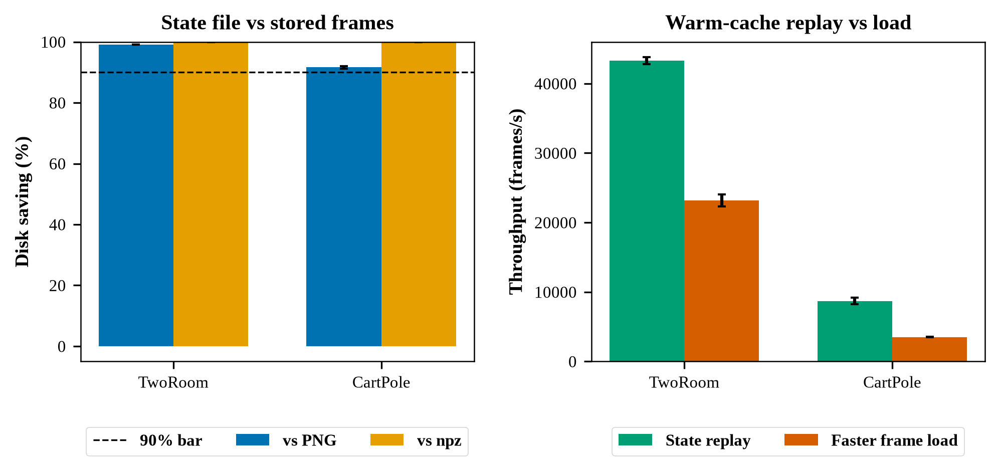

stable-envs state replay
PASS CPU experiment. Store simulator states, draw the frames again.
| Env | vs PNG | vs npz | Lossless | Replay fps | Load fps |
|---|---|---|---|---|---|
| TwoRoom | 99.10% | 99.98% | 1.000 | 43297.9 | 23177.8 |
| CartPole | 91.68% | 99.97% | 1.000 | 8686.5 | 3503.0 |

Library: galilai-group/stable-envs